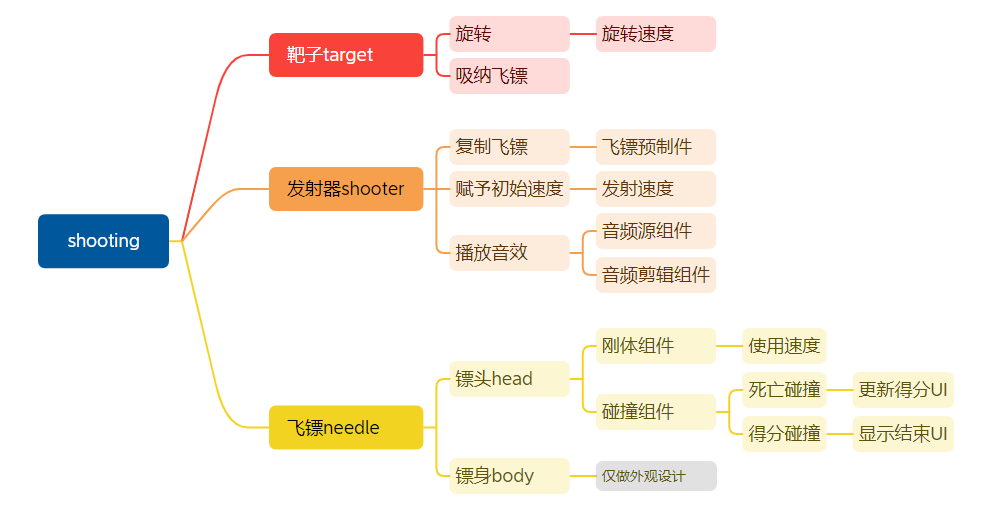
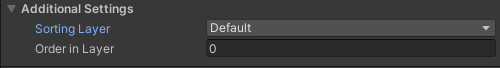
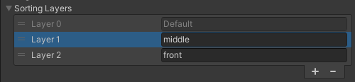
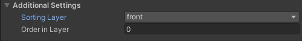
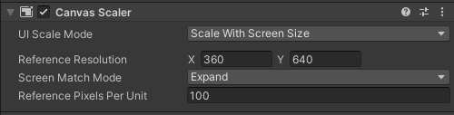
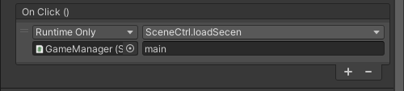
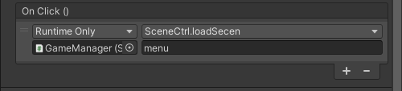

Needle
概述 Overview
- 作品欣赏 Product
- WebGL Windows
- 简介 Introduction
- . 单击鼠标，射出飞镖needle击中目标target；并跟随目标target一起旋转；
- . 射出的飞镖如果碰到其它飞镖，游戏结束；
- . 每正确击中目标，得1分；
- . 飞镖的发射和击中有音效；
- . 有背景音乐；
- 脑图 Mind
- 
- []多排序使用：次序排序Order in Layer、层级排序 Sorting Layer；
- []多脚本使用：静态类、静态变量；
- []多UI元素使用：布局和联动；
- []多音频使用：背景音乐、游戏音效；
- []多场景使用：开始场景、主场景；
- []多碰撞使用：普通碰撞和触发碰撞；
环境 Environment
- 1. 创建2D项目；创建常用素材对应的文件夹，如Scripts、Prefabs；避免使用中文、特殊符号；
- 2. 开发环境选择竖版布局Tall或定制布局；
- 3. 设置游戏Game分辨率为9*16比例；
- 4. 调整摄像机背景颜色为土黄，如#cccfab；
- 5. 参考素材如下或自行准备；
- . 音频素材：音效 ；背景音乐 ；
- . 字体素材：禹为 、微软雅黑 ；
- . 图片素材：另存为保存；
- []项目创建 Project
- []摄像机背景调整 Camera
- []游戏分辨率调整 Resolution
- []布局调整 Layout
靶子 Target
- 1. 创建2D精灵Circle作为目标target，reset，黑色；上移一定距离；
- 2. 创建标签target并为目标target指定该标签；
- 3. 创建新的 排序层 front，将目标target置于该层，以确保该对象位于前面；排序层越靠后，层中的对象就越靠前；默认情况下，所有对象位于default层，需要使用order区分前后；
- 
- 
- 
- 4. 添加碰撞组件[什么类型的?] ，调整碰撞区域略小于对象本身；
- 5. 创建脚本Target.cs并加载到目标target，使其匀速[如何实现?]旋转，旋转速度约60；
-
using System.Collections; using System.Collections.Generic; using UnityEngine; public class Target : MonoBehaviour { public float speed; void Update() { transform.Rotate(new Vector3(0, 0, speed * Time.deltaTime)); } } - []排序层 SortingLayer
- []标签 Tag
- []碰撞 Collide
- []匀速转动
飞镖 Needle
- 飞镖由镖头head和镖身body组成，颜色棕色，如#762405；
- 飞镖的创建有两种方案：
- 方案1：利用空对象包含镖头和镖身，镖头和镖身是兄弟关系；
- 方案2：利用镖头包含镖身，镖头和镖身是父子关系；
- 飞镖的移动也有两种方案：
- 方案1：直接指定移动；可以使用静态动画Animation，也可以使用脚本动画；请参考项目《飞翔的小鸟》中柱子的设计；
- 方案2：由后续的发射器shooter指定移动；
- []均以方案2为例
- 1. 镖头
- . 2D精灵Circle，reset；
- . 添加碰撞组件，调整碰撞区域略小于对象本身；
- . 添加刚体组件，重力scale为0；引入刚体组件仅仅是为了受力，但是又不希望它在重力因素下掉落；
- . 创建标签needle并指定；
- 2. 镖身
- . 在镖头head下创建2D精灵Square作为镖身，reset；细长；调整尺寸和位置；
- . 添加碰撞组件，采用触发碰撞；为呈现扎入的效果，调整碰撞区域 小于对象本身高度； 镖身的碰撞组件也可以添加在镖头上；
- 3. 创建脚本Needle.cs并挂载，预留-和靶子-以及-和其它飞镖-的碰撞处理业务；
-
using System.Collections; using System.Collections.Generic; using UnityEngine; public class Needle : MonoBehaviour { Rigidbody2D rb; private void Start() { rb= GetComponent<Rigidbody2D>(); } //死亡碰撞 private void OnCollisionEnter2D(Collision2D collision) { if (collision.gameObject.tag == "needle") { print("collider"); //预留业务逻辑 } } //有效碰撞 private void OnTriggerEnter2D(Collider2D collision) { if (collision.tag == "target") { print("hit"); //预留业务逻辑 } } } - 4. 将飞镖生成预制件，便于后续发射器shooter使用，用来动态生成多个飞镖；
- []标签 Tag
- []碰撞 Collide
- 这部分的设计非常灵活。。。
发射器 Shooter
- 单击鼠标时，生成飞镖并赋于一定速度，使其向上飞出去；
- 1. 创建2D精灵Circle作为发射器shooter，reset，黑色；置于屏幕底部中间；
- 2. 添加音频源组件，每生成一个飞镖，就播放一次发射音效；如需精细化，还需要添加飞镖的扎入音效[在哪里实现?]；
- 3. 创建脚本Shooter.cs并挂载，指定暴露的每个参数；速度up约30；
-
using System.Collections; using System.Collections.Generic; using UnityEngine; public class Shooter : MonoBehaviour { public GameObject needlePrefab; public AudioSource player; public AudioClip shootClip; public float up; void Update() { //预留时间缩放度的判断 if (Input.GetMouseButtonDown(0)) { GameObject needle = Instantiate(needlePrefab, transform.position, Quaternion.identity); needle.GetComponent<Rigidbody2D>().velocity = Vector2.up * up; player.PlayOneShot(shootClip); } } } - []动态生成 Instantiate
- []获取组件 GetComponent
- []刚体 RigidBody
- []速度 Velocity
- []音效 Audio
碰撞 Collider
- 1. 有效碰撞 Credit
- 和目标target碰撞，击中目标，需要处理的业务逻辑有：
- . 游戏得分/加分[加分涉及的UI见后续操作]；
- . 飞镖速度为0；且成为目标target的一部分，跟随目标target一起转动；
- 修改飞镖脚本Needle.cs的有效碰撞逻辑为：
-
private void OnTriggerEnter2D(Collider2D collision) { if (collision.tag == "target") { print("hit"); rb.velocity = Vector2.zero; transform.parent = collision.transform; //预留加分逻辑 } } - 2. 死亡碰撞 Death
- 和其它飞镖碰撞后，游戏结束：
- . 游戏停止/时间停止；
- . 显示结束UI；
- [说明] UI的制作和死亡碰撞逻辑见后续操作；
- []速度 Velocity
- []调整父子关系 Parenting
用户界面 UI
- 1. 创建画布，修改画布缩放模式为跟随屏幕，在大小不同的分辨率中UI可以自动变大变小；请使用标准分辨率；
- 2. 指定匹配模式为扩展Expand；可以较好的适应window平台和WEBGL平台；
- 3. 创建传统Button为重玩按钮replay、返回按钮back，调整大小、文字颜色、字体等属性；利用定位框调整置屏幕中央；
- 4. 加入自己的其它设计；
- []
- . 推荐：中心的UI元素请参考屏幕中心定位；上面的UI元素请参考顶部定位；下面的UI元素请参考屏幕底部定位；
- . 如需使用中文，请使用中文字体；
- . 按钮事件见后续；
- 
- []画布设置 CanvasScale
- []元素定位 Position
- []按钮 Button
游戏管理 GameManagement
- 主场景中涉及到场景跳转和得分等业务逻辑，为了 去耦 ，将业务分为俩个模块脚本，分别处理场景跳转和其它业务；
- 场景管理
- .处理场景的跳转业务逻辑；这个模块还可以提供给其它场景使用如开始场景，增加了代码的重用度；
-
//ScentCtrl.cs using System.Collections; using System.Collections.Generic; using UnityEngine; using UnityEngine.SceneManagement; public class ScentCtrl : MonoBehaviour { public void loadSecen(string str) { SceneManager.LoadScene(str); } public void quitApp() { Application.Quit(); } } - 主业务管理
- . 处理得分的逻辑；
- . 处理结束UI的显示；
- . 按钮事件：重玩和返回；
-
using System.Collections; using System.Collections.Generic; using UnityEngine; using UnityEngine.UI; public class GameManager : MonoBehaviour { public static GameManager instance; public GameObject ending; public Text scoreTxt; int score; private void Awake() { instance = this; } void Start() { Time.timeScale = 1; ending.SetActive(false); score = 0; } public void showScore() { score++; scoreTxt.text = score.ToString(); } public void showEnding() { ending.SetActive(true); Time.timeScale = 0; } }- [] 为方便脚本直接数据的使用，采用静态Static类[单例]；
- 操作步骤
- 1. 创建空游戏对象为gameManager；reset；
- 2. 创建场景管理脚本ScentCtrl.cs并挂载；
- 3. 创建主业务管理脚本GameManager.cs并挂载；
- . 引入UI的使用；
- . 引入场景的使用；
- . 暴露结束UI、得分文本框；
- . 暴露公有函数：得分逻辑；结束UI显示逻辑；
- . Start时的参数初始化；
- 4. 为脚本指定/拖入暴露的各个参数；
- []游戏管理
- []单对象多脚本使用
完善 Amendment
- 为预留的各部分指定游戏管理静态类GameManager声明的公用函数；
- 完善得分逻辑
- 修改飞镖脚本Needle.cs的得分逻辑为：
-
private void OnTriggerEnter2D(Collider2D collision) { if (collision.tag == "target") { print("hit"); rb.velocity = Vector2.zero; transform.parent = collision.transform; GameManager.instance.showScore(); } } - 完善死亡逻辑
- 修改飞镖脚本Needle.cs的死亡逻辑为：
-
private void OnCollisionEnter2D(Collision2D collision) { print(collision.gameObject.tag); if (collision.gameObject.tag == "needle") { GameManager.instance.showEnding(); } } - 为重玩按钮replay指定事件
- 
- 为返回按钮back指定事件
- 
- 完善发射器shooter
- 修改发射器Shooter.cs中动态生成飞镖的条件如下，避免游戏结束仍然可以发射飞镖并播放音效；完整代码如下：
-
using System.Collections; using System.Collections.Generic; using UnityEngine; public class Shooter : MonoBehaviour { public GameObject needlePrefab; public AudioSource player; public AudioClip shootClip; public float up; void Update() { if (Input.GetMouseButtonDown(0) && Time.timeScale != 0) { GameObject needle = Instantiate(needlePrefab, transform.position, Quaternion.identity); player.PlayOneShot(shootClip); needle.GetComponent<Rigidbody2D>().velocity = Vector2.up * up; } } } - []静态类的使用：多脚本数据通信
- []公有函数的使用
发布 Publish
- 1. 添加场景；
- 2. 平台选择：
- 2.1 Window平台：设置全屏模式为FullScreen；因为游戏Game比例是9:16，且画布跟随屏幕，并且指定了360x640且拓展，所以全屏下，仍然可以保持比例，并自动拓展；
- 2.2 WEBGL平台：设置和Game比例一致的大小；当全屏时，也可以保持比例，自动拓展；如果设置的尺寸大于当前显示器的屏幕，通过 全屏 操作也可以实现完美匹配；注意中文字体的使用；
- 3. 发布预览；
- 4. 打包压缩提交到 学习通；详见作业要求；
提高 Updating
- 1. 单场景多UI元素联动：选项、介绍等；
- 2. 多场景：增加开始场景，可以重复使用场景管理脚本；
- 3. 菜单动画；
- 4. 碰撞动画：粒子系统；
- 5. 背景音乐不间断、可调，可增加可视化的UI图标；参考代码如下：
-
//BGM.cs using System.Collections; using System.Collections.Generic; using UnityEngine; public class BGM : MonoBehaviour { public static BGM instance; //AudioSource必须是public public AudioSource player; public AudioClip bgm; void Awake() { if (instance == null) { instance = this; } else if (instance != this) { Destroy(gameObject); } DontDestroyOnLoad(gameObject); } void Start() { player.clip = bgm; player.Play(); } } -
//VolCtrl.cs using System.Collections; using System.Collections.Generic; using UnityEngine; using UnityEngine.UI; public class VolCtrl : MonoBehaviour { public Image volumeImg; public Sprite normalSprite; public Sprite muteSprite; private void Update() { if (Input.GetKeyDown(KeyCode.M)) { BGM.instance.player.mute = !BGM.instance.player.mute; if (BGM.instance.player.mute) volumeImg.sprite = muteSprite; else volumeImg.sprite = normalSprite; } if (Input.GetKeyDown(KeyCode.UpArrow)) { BGM.instance.player.volume += 0.1f; if (BGM.instance.player.volume > 0) { BGM.instance.player.mute = false; volumeImg.sprite = normalSprite; } } if (Input.GetKeyDown(KeyCode.DownArrow)) { BGM.instance.player.volume -= 0.1f; if (BGM.instance.player.volume <= 0) { BGM.instance.player.mute = true; volumeImg.sprite = muteSprite; } } } } - ...完结..撒花...
-


- 思考
- 代码如何去耦/减少代码的耦合度？